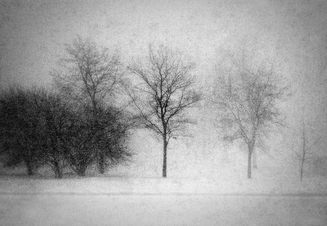

黑白胶片对蓝光和紫外线比肉眼更敏感。由于天空是蓝光和紫外线的最明显的来源，如果不用滤光镜片的话，它们的影调就会过亮。但是如果采用了8号黄色滤光镜片的话，天空的影调看上去就会显得正常了。而21号桔黄色滤光镜片，15号深黄色滤光镜片和25号红色滤光镜片，通过阻挡蓝光和紫外线可以使天空变暗。
胶片的另一特性是它的颗粒度。在放得很大的照片上会明显地出现那些象沙子一样的胶片颗粒。颗粒度随胶片感光度的增加而显著增加。低速胶片的粒子比高速度胶片要细得多。不过即使高速胶片，其颗粒亦要在照片放得很大时才会变得明显。
如果你想通过增加颗粒度来摆脱真实性，你可以用高速胶片，并把它放得很大。颗粒度可以给照片增加浪漫的幻想色彩，或者你可以根据主题的需要，用它来加强疑幻疑真的感觉。
欲获得最佳的颗粒效果，就该用高速胶片。这种效果还可以通过暗房强显和把图象放得大而又大来获取。
通常胶片上的颗粒被认为是一种缺陷，但它亦能被用于加强画面的情调。
图片
